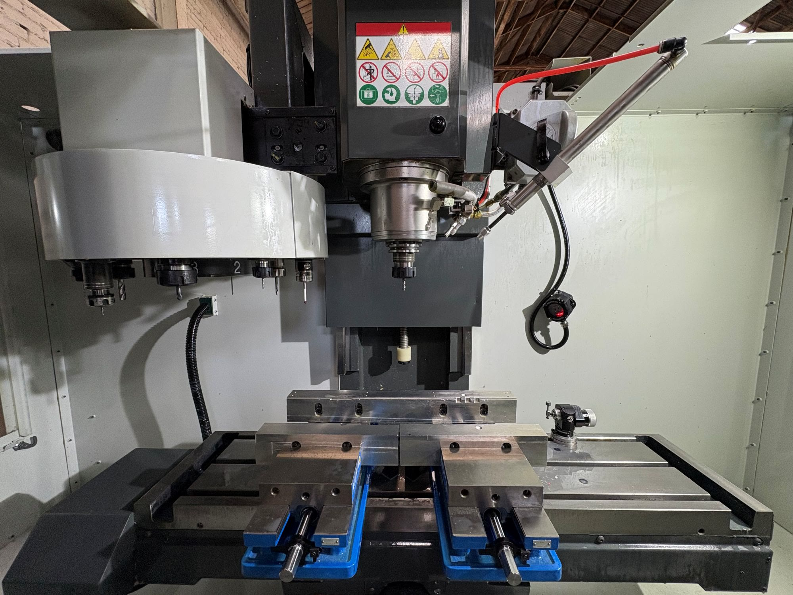

01
Tornejat CNC
Eixos, casquets i peces de revolució, d'una unitat a sèries llargues.
Mecanitzats de precisió
Vallsorell
Fes scroll ↓
Som un taller familiar de Vallsorell. Tornegem, fresem i soldem peces úniques o en sèrie per a la indústria que no es pot permetre ni una dècima de marge.
La tolerància amb què treballem
Un cabell humà fa uns 0,07 mm. Nosaltres treballem 14 vegades més fi.
Eixos, casquets i peces de revolució, d'una unitat a sèries llargues.
3, 4 i 5 eixos: geometries complexes en una sola subjecció.
Estructures i muntatges soldats, llestos per instal·lar.
Del plànol (DWG, STEP, PDF) a la peça acabada i verificada.
Recanvis i reparacions perquè la línia no s'aturi.
anys d'ofici
per respondre
serveis sota un sostre
empresa familiar des de

Envia'ns el plànol.
Et responem en 48 hores.